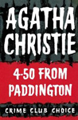
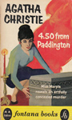
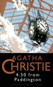
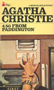
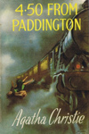

4.50 from Paddington is a detective fiction novel by Agatha Christie, first published in November 1957 by Collins Crime Club. This work was published in the United States at the same time as What Mrs. McGillicuddy Saw! by Dodd, Mead and Company. The novel was published in serial form before the book was released in each nation and under different titles.
Reviewers at the time generally liked the novel, but would have liked more direct involvement of Miss Marple, and less consideration of her failing strength, using others to act for her. A later review by Barnard found the story short on clues, but favourably noted Lucy Eyelesbarrow as an independent woman character.





Screen Versions
The book was made into a 1961 movie - Murder, She Said - starring Margaret Rutherford in the first of her four appearances as Miss Marple. It was the first Miss Marple film and featured Stringer Davis, Rutherford's real life husband. The name of the manor house where Marple conducts her inquiries was called Rutherford Hall in the novel, and was changed to Ackenthorpe Hall in the film to avoid comparison with the leading actress's surname. Crackenthorpe, the family name in the novel, was shortened to Ackenthorpe. MGM made three sequels, Murder at the Gallop, Murder Most Foul and Murder Ahoy!, all with Rutherford starring as Christie's famed amateur sleuth.
The BBC broadly followed the original plot with its 1987 version, starring Joan Hickson, who had appeared in the Rutherford film as Mrs. Kidder. There were several changes to the plot.
ITV adapted the novel for the series Marple in 2004 starring Geraldine McEwan as Miss Marple, with the title What Mrs. McGillicuddy Saw! used when it was shown in the US. The adaptation contained several changes in it from the novel and Miss Marple is seen reading Dashiel Hammett's "Woman in the Dark and Other Stories", providing an inter-textual detail that suggests some of Miss Marple's detective insights come from her reading of classic murder fiction as well as her shrewd understanding of human nature.


Toby Marlow
Gerald Cross
Neve McIntosh